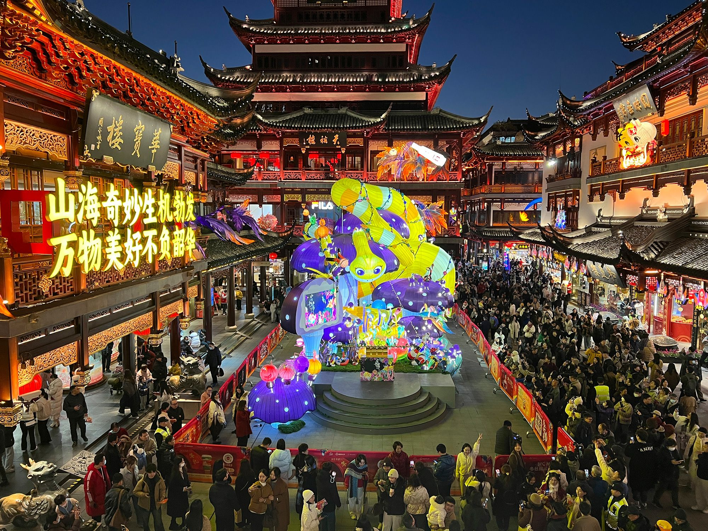
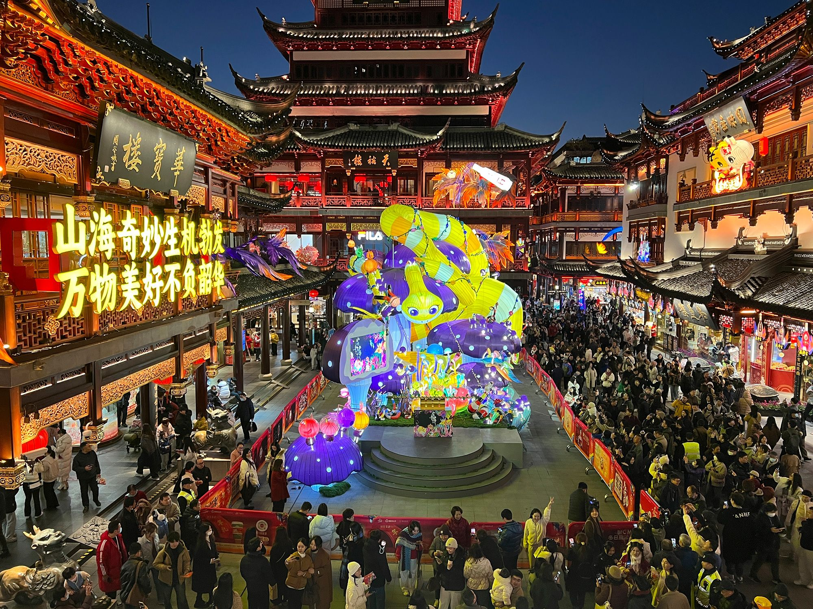
 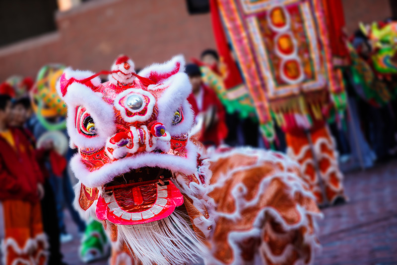
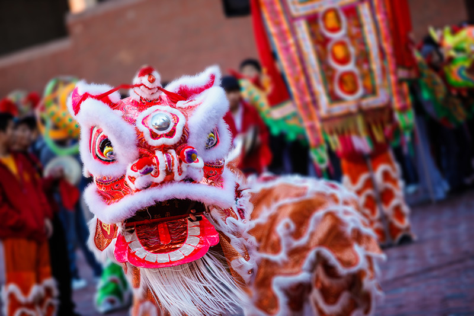
 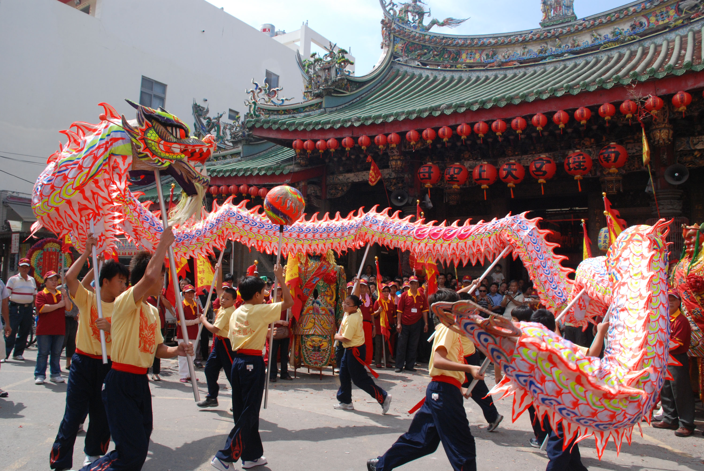
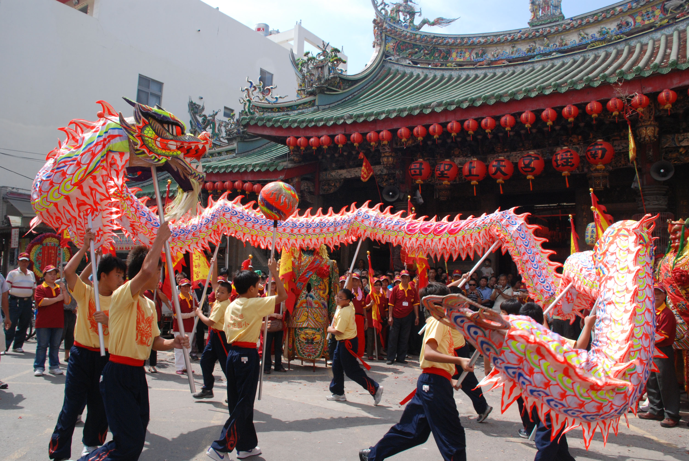
 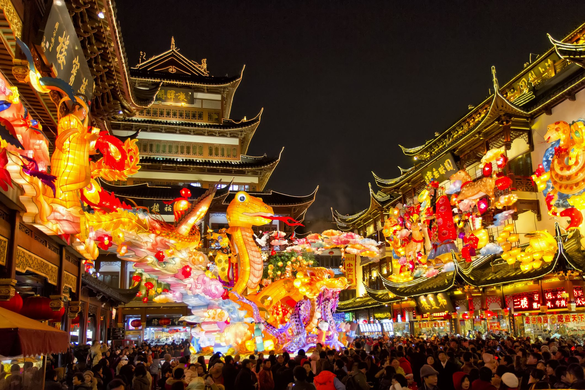
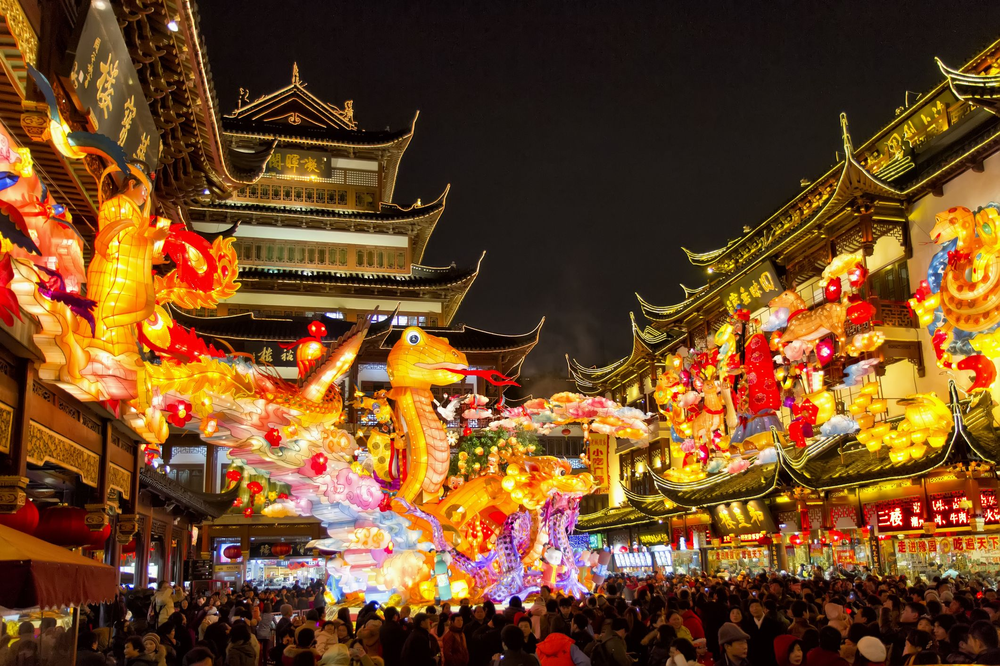

Chinese culture is one of the oldest in the world. It is known for important traditions such as Chinese New Year, the Mid-Autumn Festival, and the Dragon Boat Festival. Families often celebrate with special foods, fireworks, and gatherings. Chinese culture also includes calligraphy, traditional clothing, martial arts, and respect for family. These customs have been passed down for thousands of years and still play a big part in daily life today.
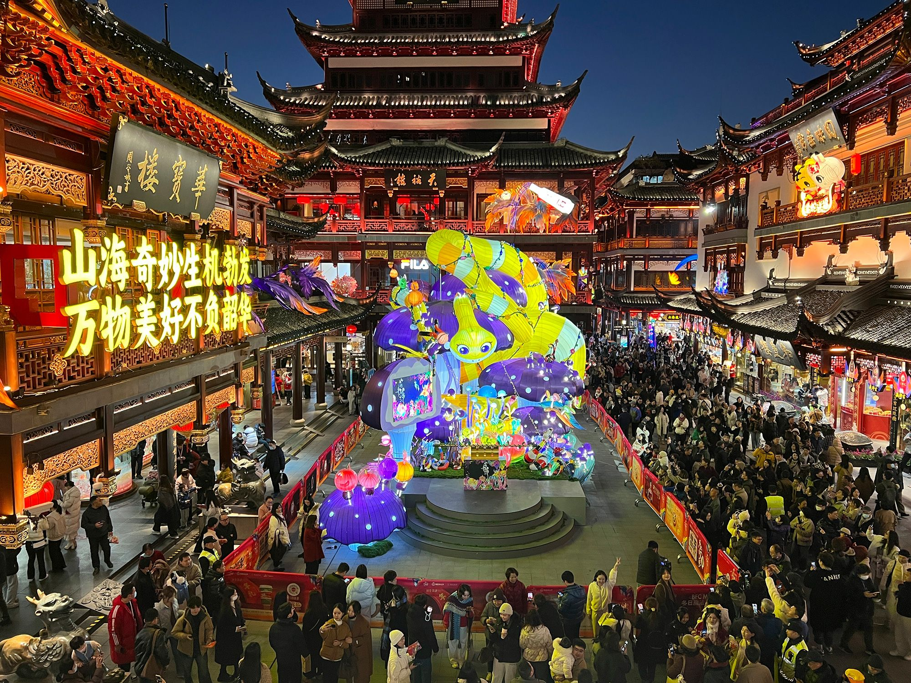
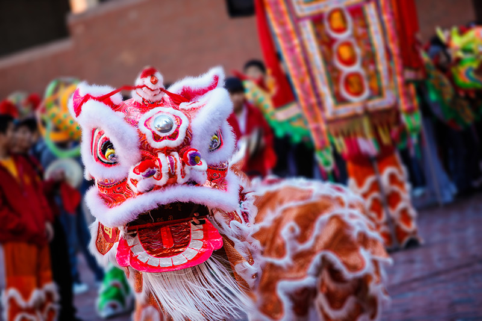
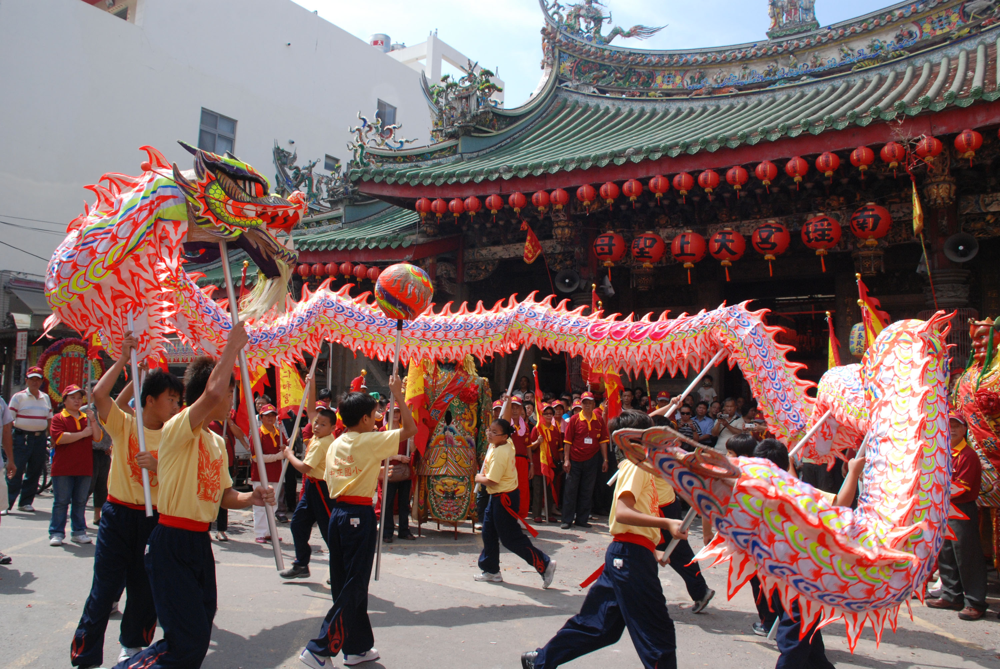
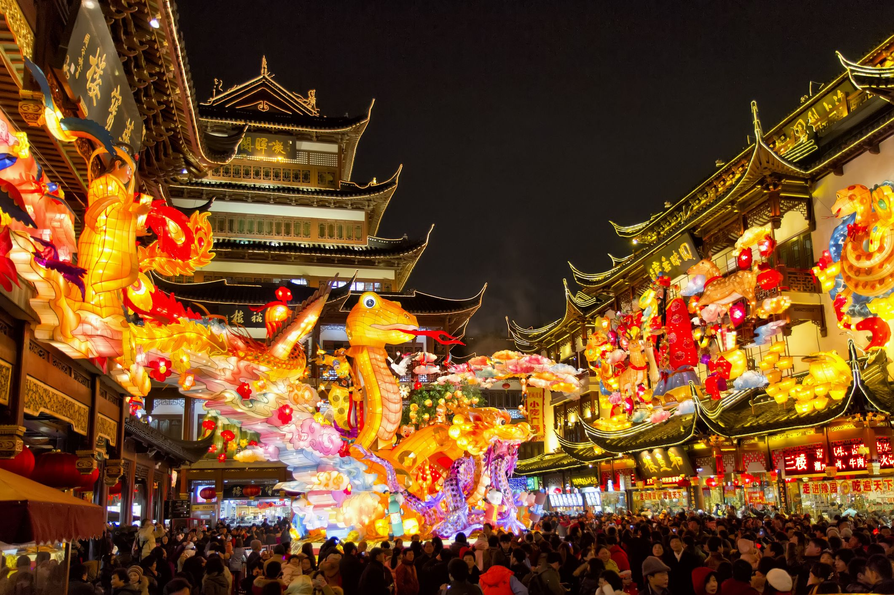